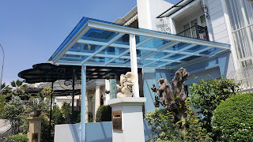

Kaca ialah keperluan yang krusial bagi sebuah industry maupun gedung. Kita kerap kali menemui material-material hal yang demikian pada gedung, kantor, industry malah rumah hunian. Kaca juga berfungsi sebagai daerah keluar masuknya sinar matahari pada sebuah bangunan. Karenanya dari itu, benda ini cukup penting diterapkan pada sebuah bangunana.
Jenis-tipe kaca diantara lain kaca tempered Pekanbaru, kaca shower, railing kaca, kanopi kaca dan masih banyak lagi. Segala material hal yang demikian bisa di aplikasikan harga sebuah hunian menonjol lebih indah nyaman dan juga aman.
Jasa Pemasangan Kaca Tempered Pekanbaru

kaca tempered Pekanbaru adalah salah satu macam kaca dari sekian banyak variasi kaca yang acap kali digunakan untuk jendela, pintu, dan partisi. Diperlukan kaca ini dibuat dari kaca float bermutu tinggi lewat pelaksanaan pemanasan thermal di mana kaca dipanaskan hingga pada spot lunak kemudian didinginkan dengan kencang. Masyarakat telah paham keunggulan dari kaca ini. Karenanya dari itu, mereka sudah mulai menyenangi variasi kaca yang satu ini. Melainkan dahulu hanya gedung perkantoran atau pusat perbelanjaan modern saja yang mengaplikasikan macam kaca ini, kini rumah hunian juga sudah dibangun dengan kaca tempered Pekanbaru. Selain ini tak lain sebab semakin banyak orang yang memahami mutu serta keunggulan dari kaca tempered Pekanbaru ini.
Kalau itu, beraneka bagian properti akan kian menarik seandainya dibuat dari kaca tempered Pekanbaru seperti kanopi, pintu, kamar mandi, dan balkon.
Salah satu jenis kaca yang pantas untuk diterapkan pada semua variasi bangunan ataupun perindustrian ialah kaca tempered Pekanbaru, merupakan yang paling aman sebab mempunyai elastisitas lebih bagus dibandingi dengan kaca umumnya. Harga untuk setiap pemasangan dijamin termurah dan hasil cara kerja yang layak dengan kemauan anda. Bukan sembarang alat yang dipakai untuk memotong kaca tempered Pekanbaru cocok dengan kebutuhan. Tak saat ini anda sedang ingin membangun suatu bangunan atau gedung, anda dapat memanfaatkan kaca tempered Pekanbaru untuk dipakai lantas ke seluruh jenis bidang. Seandainya aman kaca tempered Pekanbaru juga kapabel memberikan kesan estetika yang sungguh-sungguh baik dibandingkan dengan kata jenis lainnya. Harga yang ditawarkan untuk pemasangan kaca tempered Pekanbaru benar-benar murah.
Info Pemesanan Selengkapnya
Google Maps: https://www.google.com/maps/d/u/0/viewer?mid=1wHa3dBFC0jOCBS2FtlNAYKtIEp5M6KyQ&ll=-7.27380280025364%2C112.65243155000007&z=18
Note: https://www.facebook.com/notes/distributor-of-industrial-supply/kontraktor-jasa-pemasangan-kaca-tempered/1785713878395158/
Event: https://www.facebook.com/events/260234754508702/
Portfolio Produk: https://www.facebook.com/1681607345472479/photos/?tab=album&album_id=1712631995703347
Distributor & Supplier Kaca Shower
Semua orang pasti berkeinginan punya kamar mandi yang kondisinya senantiasa bersih sehingga dapat terasa lebih nyaman saat digunakan. Dengan menggunakan kaca shower pastinya kamar mandi yang dimiliki akan lebih kelihatan mewah dan menjadi sekat antara area berair dan zona kering. Kelebihan shower screen dibanding dengan sistem penyekatan yang lain merupakan dijadikan dalam bentuk yang telah jadi dan tinggal dipasang saja. Tidak cuma cantik melainkan kaca shower bisa menjadi kaca pembatas antara lantai kering dan berair pada kamar mandi. Penyekat ini akan memisahkan antara daerah basah yang digunakan untuk mandi atau meletakan shower dan tempat lain yang yakni area kering. Di samping pintu kaca shower akan membuat kamar mandi kecil terlihat lebih besar.
Tak anda sedang memerlukan kaca shower, hal yang perlu anda lakukan merupakan mengunjungi dis.or.id. Disana tersedi kaca shower dengan berbagai ukuran dan juga harga yang juga cukup terjangkau.
Distributor, Supplier & Jasa Pasang Kanopi Kaca

Salah satu ragam kanopi kaca yang dapat anda aplikasikan pada atap yaitu atap kaca skylight yang ialah kanopi kaca dalam format jendela horizontal atau kubah yang lazimnya ditempatkan di atap bangunan yang memiliki maksud untuk pencahayaan ruangan. Atap kaca skylight banyak digunakan pada rumah, gedung, kantor, café yang mengusung gaya modern untuk membuat efek cahaya yang dramatis pada ruangan bagian bawahnya serta memberi kesan modern pada bangunan. Dan sensasi mandi menjadi lebih asik untuk dinikmati. Ada beberapa alasan mengapa Pintu Kaca Shower banyak diterapkan salah satunya merupakan kaca lebih terlihat bersih dan rapi dan juga lebih mudah dalam perawatannya. {Jika tembus pandang, kaca menyerap sinar yang masuk sehingga kian tebal kaca maka kian sedikit cahaya yang bisa melewatinya, karenanya sifat transparannya makin berkurang.|Di samping pintu kaca shower akan membikin kamar mandi kecil kelihatan lebih besar. Atap akrilik atau dapat juga disebut atap kaca acrylic ini banyak ditemukan di sebuah bangunan rumah, seperti ruko, apartemen, restoran, mall, hingga bangunan gedung.
Tidak anda beratensi untuk memasang kaca kanopi pada rumah, gedung maupun kantor, anda bisa seketika mengunjungi dis.or.id. Terdapat banyak kanopi dengan bermacam ukuran dan ketebalan yang bisa anda pilih cocok dengan yang anda butuhkan. Jikalau itu, kanopi juga bisa melindungi kendaraan beroda empat dan kendaraan lain anda. Bila fungsi utama kanopi sebagai pelindung untuk bangunan tersebut, pemasangan kanopi kaca juga dapat membuat bangunan menjadi nampak lebih indah dan menarik, apalagi menggunakan konsep yang sama dengan konsep rumah minimalis. Setelah kaca untuk atap kanopi cukup digemari. Tidak anda sedang mencari kanopi kaca, anda bisa langsung mengunjungi dis.or.id. Disana anda akan memperoleh kanopi kaca yang layak dengan bermacam ketebalan dan harga yang cukup relatif murah.
Jasa Maintenance Kaca
Tidak kaca tidak kusam, maka kaca seharusnya dibersihkan secara regular. Peralatan jenis kotoran seperti debu serta sinar matahari dan juga hujan sering membuat kaca gedung menjadi kusan dan tak menarik. Bila itu, mampu membersihkan bangunan kaca melengkung.
Sekarang juga hadir maintenance kaca untuk membersihkan kaca berbentuk melengkung. Lebih dari itu, Jikalau ahli yang dimilik oleh dis.or.id juga bisa mengoreksi kaca yang rusak.
Tidak anda berminat, anda dapat seketika mengunjungi situs dis.or.id untuk mengamati berita lebih lanjut mengenai jasa maintenance kaca yang di tawarkan. Dis.or.id juga sudah mempersiapkan dengan beraneka alat yang dapat digunakan untuk menjangkau semua sudut gedung, sekalipun gedung Anda sangat tinggi. Kecuali cuma dalam hal membersihkan kaca, mereka juga mampu mengerjakan pembenaran serta penggantian kaca yang mengalami kerusakan.
Distributor & Supplier Pintu Kaca

Tak cuma di gedung atau perkantoran, tapi pntu kaca juga dapat anda aplikasikan pada rumah agar cahaya bisa langsung masuk pada ruangan dan memberikan suasana hangat. Dengan beraneka varian pigura seperti frame kayu atau aluminium dan tanpa bingkai atau frameless yang yaitu desain pintu kaca tanpa frame. Anda dapat memutuskan apakah teladan pintu kaca lipat satu, lipat dua, atau sliding (geser). Anda bisa pilih bahan untuk frame yang Anda inginkan, apakah itu dihasilkan dari aluminum atau dari kayu. Anda tinggal tentukan saja model pintu kaca seperti apa yang ingin Anda miliki. Dalam hal ini, terdapat beberapa variasi kaca dengan kwalitas yang terbaik.
Dis.or id siap menolong anda untuk membuatkan pintu kaca idaman anda.
Dis.or.id juga menyiapkan beberapa variasi kaca dengan ketebalan yang berbeda. Anda bisa memilih kaca tempered Pekanbaru yang sekarang ini sedang naik daun.
Jual Kaca Cermin

Kaca cermin ataupun kaca reflektif yakni tipe kaca yang dapat memantulkan sinar dan mereduksi sifat tembus pandang dari sisi luar, sehingga sering pula disebut dengan kaca one way. Banyak desain menarik dari cermin yang bisa Anda pilih di sini. Ada cermin persegi yang direkatkan beraturan, cermin berbentuk seperti daun, dan lain sebagainya. Bahkan, ada juga desain kaca cermin yang unik. Jadi, Anda bisa sesuaikan desainnya dengan desain ruangan yang akan Anda pilih untuk menempatkan cermin tersebut.
Pun, Anda dapat pakai kaca cermin ini sekaligus sebagai material utama, seperti sebagai pintu lemari di kamar tidur Anda. Akan lebih menarik lagi jikalau Anda memakai kaca cermin ini sebagai bahan utama furniture. Sementara itu, Anda yang berada di dalam ruangan bisa mengamati orang lain yang ada di luar. Atau Anda bisa buat pintu kaca cermin. Jadi, orang di luar tak bisa melihat Anda berada di dalam.
Jasa Pemasangan Railing Kaca

Kini railing kaca kini semakin populer. Anda dapat memilih desain sesuka hati Anda. Pemilik rumah ingin sekali mempunyai interior yang demikian itu minimalis. Mereka tidak lagi membuat pagar tangga atau balkon dari kayu.
Ada banyak pilihan tipe kaca yang dapat digunakan. Anda bisa memilih kaca tempered Pekanbaru sebagai bahan utamanya. Jikalau itu, kalau terjadi bencana gempa bumi dan terbukti kaca pecah, kaca tempered Pekanbaru ini akan pecah dan membentuk pecahan yang sungguh-sungguh kecil dan lembut. Dengan demikian, pecahan kaca tempered Pekanbaru tak akan melukai orang yang terkena pecahan. Pecahannya amat kecil dan lembut sehingga tak akan melukai siapapun yang terkena pecahan.
Kini dis.or.id sudah menyediakan railing kaca berkulitas dan berkualitas. Harga yang betul-betul ekonomis serta kwalitas terbaik yang sudah terjamin membikin anda tidak akan menyesal membeli railing kaca di dis.or.id. Tentu dengan harga yang murah tapi konsisten berkelas.
Jasa Pemasangan Kubikel Toilet

Dulu, kamar mandi cuma disekat oleh penyekat yang berbahan kayu, jarang sekali yang menggunakan bahan lain. Kubikel toilet adalah kaca pembatas yang dipakai pada kamar kecil.
Dengan menerapkan kamar mandi kubikel tentnya kamar mandi yang anda miliki Menonjol lebih elegan dan mewan jauh dari kesan kumal. Disana terdapat kubikel kaca dengan bermacam ukuran dan ketebalan dengan harga yang cukup terjagkau di bandingkan dengan tempat lainnya. Karena disana terdapat kubikel toilet dengan beraneka ukuran serta ketebalan kaca.
Profit dari sekat kaca memberikan yaitu bisa memberikan efek luas sebab ruangan tersekat tapi secara visual tak.
Namun penggunaan kaca di kamar mandi dapat jadi dilema saat Anda meletakkannya dengan salah. Apabila anda dikala ini sedang memerlukan kaca shower untuk kamar mandi, segera saja kunjungi dis.or.id untuk melakukakn pengorderan ataupun menanyakan mendetail harga dari kaca shower.
Distributor & Supplier Pintu Lipat Kaca
Bukan hanya komponen depan saja yang dipasang pintu kaca lipat melainkan bagian dalam juga dapat. Pintu lipat kaca digunakan dikala ruangan diterapkan untuk hal yang privacy. Anda dapat mencari figur pintu lipat kaca tempered minimalis lainnya. Sekarang pasti, modelnya banyak layak dengan yang Anda butuhkan.
Harga pintu kaca lipat frameless ini betul-betul diberi pengaruh oleh ukuran lebar dan tingginya pintu. Pastikan Anda memilih kaca tempered kualitas terbaik supaya pintu lipat yang Anda pesan bisa diaplikasikan dalam kurun waktu yang betul-betul lama. Hinges yakni aksesoris vital, karena aksesoris inilah yang berperan untuk menopang berat pintu kaca lipat.
Distributor & Supplier Partisi Kaca
Anda dapat bandingkan sendiri berapa yang Anda harus siapkan untuk membikin partisi tembok. Anda harus beli batu bata, pasir, dan semen. Anda dapat menghitung sendiri berapa uang yang wajib Anda siapkan untuk membeli bahan untuk partisi tembok. Tarif pemasangan lebih murah karena memerlukan waktu yang tak lama untuk memasang partisi yang terbuat dari kaca . Dengan harga yang sangat berteman sesuai dengan kantong anda, Lantas daripartisi kaca ini tak perlu diragukan lagi. Sebagian kunjungi dis.or.id kini juga. Anda mereka. Kecuali, Anda patut tahu ada desain yang berbeda. Ada partisi kaca frameless atau tanpa bingkai dan partisi dengan bingkai. Anda patut tahu ada kaca transparan, semi transparan dan kaca yang sama sekali tidak transparan yang sering kali disebut dengan kaca cermin. Dis.or.id menjual bermacam macam kaca penyekat yang kualitasnya terbaik. Jika anda kesulitan untuk memasang dinding kaca penyekat, dis.or.id menyediakan jasa pemasangan dinding kaca penyekat untuk kamar mandi rumah anda. Disana anda akan partisi kaca yang sesuai dengan harapan anda.